ZeroGR：先过滤再评分的生成式推荐约束解码
ZeroGR 研究生成式推荐服务中的约束解码：在模型已经产生当前隐藏向量之后，如何找到合法的下一枚语义 ID、计算分数并保留下一批 beam。论文由 Xiangrui Yang 等人完成，一作主机构为香港大学，合作机构包括北京大学、华中科技大学和快手。原题为 ZeroGR: Filtering-First Constrained Decoding for Generative Recommendation，arXiv 首次提交于 2026 年 11 月 3 日 UTC，本文于 11 月 5 日核验原始全文。论文入口：arXiv:2611.04715。本轮未核验到独立公开代码入口，不据此判断代码不存在。
生成的序列必须指向目录中相关且合法的物品，但可能的序列绝大多数无效。先对所有候选评分、再过滤无效候选，会把计算浪费在最终必然丢弃的部分；真正的难点是提前过滤之后，还能维持推荐质量，并把减少的算术转化成更低的 GPU 执行成本。
1. 背景和问题
1.1 从物品打分到合法序列生成
传统推荐链路先从目录召回物品，再按逐级增加的模型成本排序。生成式推荐把物品检索转化为预测标识符：模型读取用户历史，自回归地产生若干 token，完整序列再映射到目录物品。论文采用多 token 语义标识符 SID，而非让数百万物品各占一个输出 token。语义相近的物品共享前缀，例如耳机与耳麦可能共享粗粒度编码，最后一枚 token 才区分具体物品。它压缩了每一步的输出词表，也把候选搜索组织为从粗到细的多步过程，但同时引入一个离散约束：词表允许组合出来的序列，并不一定对应真实物品。
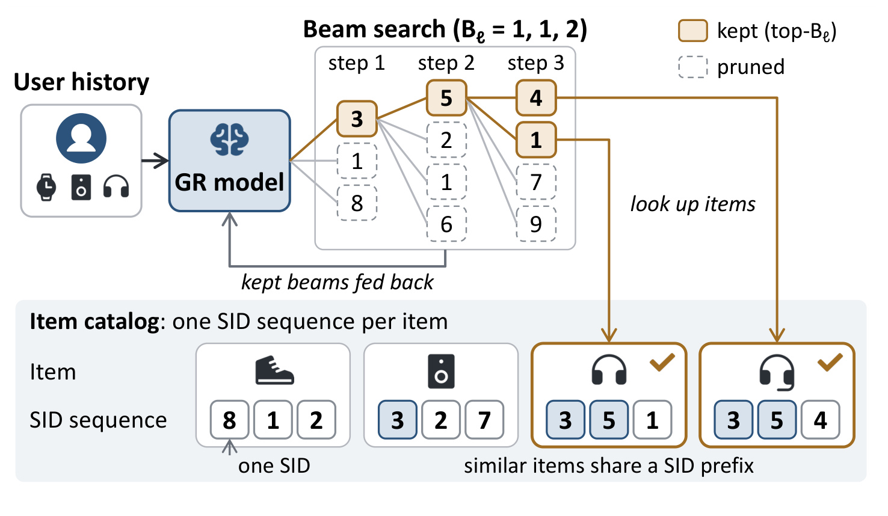
Figure 1 的上半部分展示用户历史进入生成模型后，beam search 在三个位置连续扩展前缀；实线和虚线区分保留、剪掉的候选，保留下来的前缀还会反馈给模型作为下一步条件。下半部分则是目录中的真实完整序列，最终生成的三个 token 需要在这里找到物品。图中共享前缀的两个条目说明，模型不能只选一个语义类别就停止，仍要完成末级细分。这里的合法性由目录定义，而非由模型置信度定义：即使某条虚线分支模型分数很高，只要不存在相应物品，就无法作为有效召回结果。示意图仅使用少量 token，工业场景要在大量并行前缀上重复这个过程，因此每一步的评分与约束查询都会累积进请求耗时。它也解释了本文为何优化解码组件：不改变用户建模网络，仍有机会移除输出端的大量无效工作。
单条贪心生成可以只保留当前最优的下一枚 token，推荐却通常要返回多个候选，因而维持多条 beam。每一步对每条存活前缀求下一步分数，再把各分支的累积分数放在一起竞争，保留下一轮的前若干条。若直到完整序列生成后才剔除非法结果，无效前缀会长期占据 beam，既浪费模型调用，也可能使合法物品被提前挤出。训练时奖励合法输出只能让错误更少，并不能保证目录有效性，因此逐步约束仍有价值。已有系统一般查询前缀树或其 GPU 表示，屏蔽不合法 token；ZeroGR 追问的是，既然这些 token 必然被屏蔽，为何还要先完成它们的输出投影和归一化。
1.2 稀疏性存在于目录，瓶颈存在于执行路径
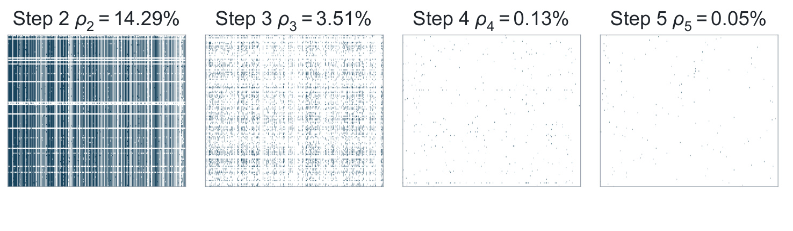
Figure 2 用不同位置的有效 SID 分布说明这个问题。第二步有效密度为 14.29%，第三步为 3.51%，第四步为 0.13%，第五步只剩 0.05%。图中的稠密格逐渐变成稀疏点，并非训练模型越来越不准确，而是前缀越长，目录允许的续接越少。按照原文所用的有效 logit 密度计算，末级绝大多数全词表投影值都不会成为候选。这个事实将优化机会与模型准确率区分开：即便模型最终几乎总能生成合法序列，全投影仍然对所有输出行做计算，目录的结构性稀疏没有自动变成执行稀疏。另一方面，早期位置仍可能较密，后期也存在不同长短的候选段，单看平均比例不能决定哪种 GPU 内核更快。图里的密度描述一个工业生成式搜索数据集，不能直接当作所有短视频、广告或电商 SID 编码的固定属性。
论文强调两种顺序的区别。先评分后过滤会在完整输出词表上计算 softmax，再把非法续接丢弃；先过滤后评分则只在合法子集上归一化。对同一条前缀内的合法 token，移除共同分母不会改变局部排序，但推荐使用多 beam，全局比较累积的对数概率。不同前缀被删除的概率质量不同，各自分母变化会给分支带来不同增益，最终结果可能改变。因此，提前过滤首先是一个需要质量验证的语义选择，其次才是计算优化。 本文没有证明两个解码器等价，而是在公开数据上展示它们输出高度重合、召回几乎一致；这项证据的范围需要在实验部分单独保留。
即使接受先过滤的顺序，也还不能直接获得速度提升。过滤产生变长的合法 token 列表，普通 GPU 矩阵乘法擅长连续、规则且可复用的数据访问；把它替换为大量零散向量点积，可能需要压缩列表、计算前缀和、收集权重行、启动更多内核。算术减少与延迟下降之间隔着内存访问和调度，论文的消融甚至展示朴素选择性投影比完整投影更慢。将整个前缀树搬到 GPU 只能省掉主机往返，若仍做全输出投影，就没有消除核心的无效算术。ZeroGR 因而同时重做索引表示和阶段间数据交接，而不是仅在原流程最前面增加一次筛选。
第三个问题来自在线更新。目录与 SID 分配会随模型版本刷新，新的过滤索引必须在有限窗口内就绪。索引构建若占用 GPU 算力，会与当前请求竞争；若在 CPU 一次性构造大对象，再集中传给 GPU，又可能造成主机到设备带宽峰值。为了支持持续服务，构建耗时、索引常驻显存、传输模式与查询耗时需要放在同一个设计里衡量。本文明确以已排序且位于主机内存的 SID 表作为构建输入，不包含上游语义编码学习、目录生产和排序的完整成本。对推荐工程而言，它的适用环节是生成式召回末端的合法性执行与候选搜索，对大模型系统的启发则在于让约束参与计算规划；它没有直接改善语言理解，也没有在原文给出 CTR 或收入的线上提升。
还要区分词表规模与目录规模。词表只决定每一步可产生哪些代码符号，目录决定这些符号组合能否指向真实物品。增加目录物品通常会增加前缀状态及索引大小，却不必按物品数等比例扩大每步输出头；增加码本则可能让完整投影更昂贵，而有效分支数未同步增加。反过来，如果某些编码层接近所有符号都合法，提前筛选并不能省去多少算术。论文同时选择五步搜索与三步观看数据，就是为了覆盖这两种不同结构，而不是证明一个共同的固定稀疏比例。评估新系统时应先看每个位置、每条前缀的有效候选分布，再看总目录条目数，否则容易把“物品很多”误当作“约束一定很稀疏”。
2. 方法
2.1 逐步切片索引：让条目位置承担状态
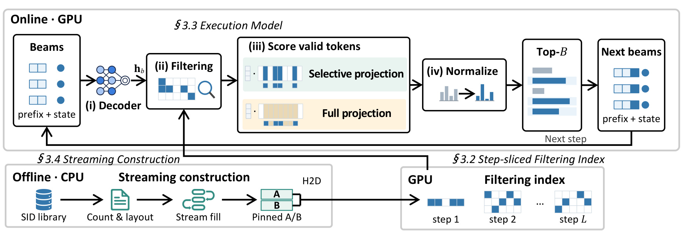
Figure 4 将系统分成离线 CPU 构建和在线 GPU 执行。下方把 SID 目录经过计数与布局确定、流式填充和双缓冲传输，形成每个解码位置独立的过滤映射；上方每条 beam 同时携带前缀、累积分数和索引状态。解码器产生隐藏向量后，状态用于取出合法 token，再选择完整投影或选择性投影，随后归一化、保留 top-B，并把新状态交给下一步。索引决定可计算的集合，共享槽决定各阶段如何交接，混合投影决定当前步骤怎样算得快，三者相互配合。图中完整投影与选择性投影并列，说明系统没有把所有位置强制改成不规则计算。还需要注意，“解码器”是图中的上游模块，后文性能评估排除了模型推理时间，不能把组件框图误读成已测完整推荐服务。合法续接由原文式（1）定义：
符号解释：$\ell$ 是当前位置，$p$ 是长度为 $\ell-1$ 的前缀，$\mathcal V_{\ell}$ 是该位置输出词表，$\mathcal S$ 是目录中合法的完整 SID 序列集合。只有能接到某个真实目录序列的 token 才在集合中。这是确定的目录约束，并不依赖模型对它给多高概率。以原文式（2）衡量平均有效密度：
符号解释：$B_{\ell}$ 是存活 beam 数，分子是各前缀合法续接总数，分母是完整投影计算的 logit 总数。$1-\rho_{\ell}$ 是结构上不会参与后续选择的比例，却不是可直接兑现的时间节省比例；选择性访问和内核组织仍有额外成本。
在上方循环中，后继状态与模型前缀一起推进，二者必须指向同一版SID目录。否则模型可以继续生成合理token，过滤器却按另一版编码查询，产生遗漏或错误映射。框图没有把版本一致性画成独立服务，因此阅读时不能把它当作已处理任意模型与目录异步更新的证明；索引刷新与线上切换仍需要工程协议。
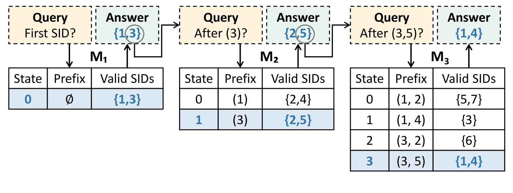
Figure 5 用三个位置说明切片索引为何不需要在线遍历一棵完整树。第一步只有空前缀，合法续接是 1 和 3；第二步按长度为一的前缀分别编号，前缀 3 的状态是 1，其合法续接为 2 和 5；第三步又对长度为二的前缀独立编号，前缀 3、5 对应状态 3，合法末级 token 是 1 和 4。蓝色路径展示的是同一条候选在不同切片中如何传递状态。状态编号只在当前映射里有意义，不是跨层稳定的全局节点身份，也不是物品 ID。由此，查询时只需携带一个整数进入下一步映射，不必保存树节点结构和通用指针。图里的表是解释索引结构的原始方法对象，行列名必须一起阅读，不能把它当成推荐结果表。切片映射将前缀状态映射为 token 与下一步状态的集合，对应原文式（3）：
符号解释：$q_{\ell}(p)$ 是前缀在第 $\ell$ 个映射中的状态，$p\circ v$ 表示追加 token。$\mathcal M_{\ell}$ 的输出同时服务打分与状态推进；到最终位置只需合法末级 token，不再存储后继状态。它把完整树的通用查询能力缩减成实际解码需要的逐层查询能力。
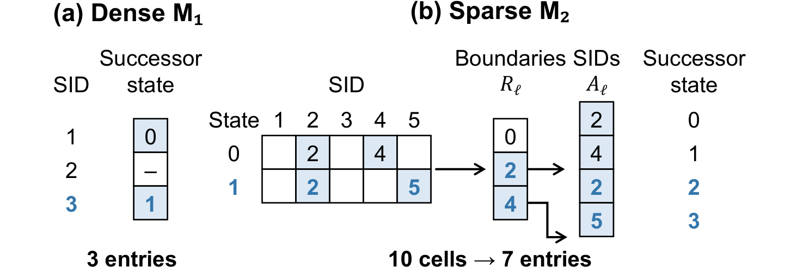
Figure 6 左边的稠密映射按 token 列直接存后继状态，无效位置放哨兵值，因此适合候选密度高、完整投影自然产生连续输出的步骤。右边的稀疏映射把每个状态的合法 token 连续放入数组，边界数组指出每个段的起止，数组中条目的位置本身就是下一层状态。图中原来十个稠密单元变为三个边界和四个 token，前缀 3 对应的段包含 2、5，其中 token 5 所在位置为 3，恰好成为下一步前缀 3、5 的状态。节省来自消除与 token 数同规模的显式后继数组，而非压缩后再在线解压。由于所有序列长度固定，末级不再需要完成标志或物品标识字段。这一设计依赖相邻映射遵守同一位置编号规则，所以构建器和查询器的布局一致性是正确性条件。稀疏段中的token可以在不同前缀下重复存储，因为同一个符号接在不同历史后，代表不同的扩展状态。省掉后继数组并不是把这些重复符号全局去重，而是让每次出现的位置唯一标记那条扩展。边界数组仍然必须保存，否则无法知道某个状态应读取哪一段。
2.2 共享槽与混合投影：保持位置稳定，减少搬运
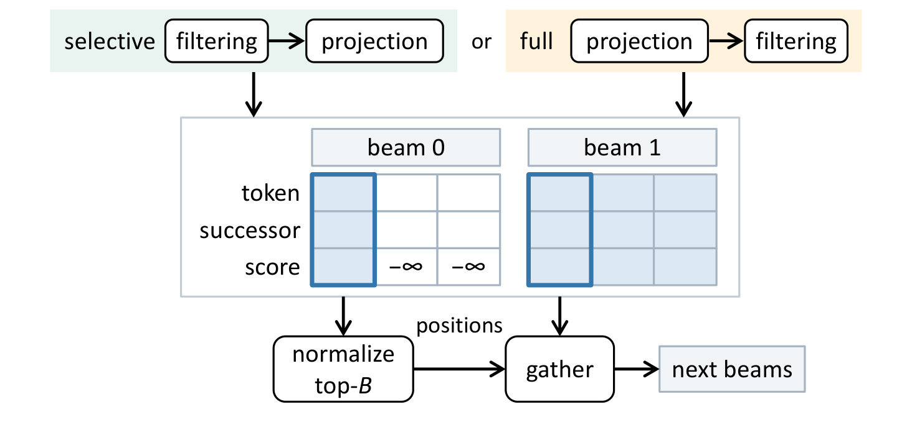
Figure 8 展示每条 beam 的候选槽中同时存放 token、后继状态和分数。稀疏映射的行长取当前步骤最长合法段的长度，短段剩余位置填负无穷；稠密映射则按完整词表对齐。所有阶段通过同一个槽位置交接，不需要先把全体合法候选压紧后再找父分支。图上绿色路径先过滤再选择性投影，黄色路径可以先做完整矩阵投影再读取有效输出，但两条路径都在归一化之前屏蔽非法 token。“投影先执行”与“完整词表先归一化”是两个不同概念，后者才是本文更改的语义顺序。保留较少 padding 的定长行，使筛选、评分、选择和 gather 能共享地址计算，避免每个阶段都重复统计变长候选数量。将原文对归一化的描述显式写成以下对照，有助于看清语义变化：
符号解释：$a_b$ 为已有前缀累积分数，$z_{b,v}$ 为输出 logit，左右分别在完整词表与合法子集上归一化。这是对论文文字算法的等价记号重写，不是作者新增的编号公式。同一 beam 中两式差一个常数，但不同 beam 的常数不同，所以 top-B 结果可能不同。
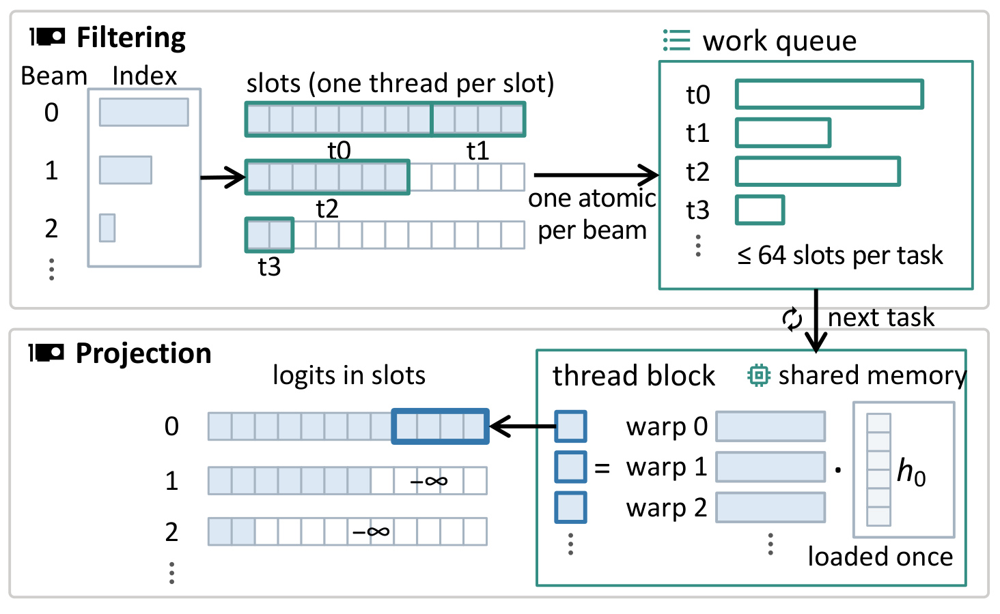
Figure 9 的上半部分为过滤内核：每个线程对应一个槽，按索引写入有效候选及后继状态，分数先设为负无穷，同时为连续有效槽建立任务队列。每个任务最多处理同一 beam 的六十四个槽，一条 beam 可以产生多个任务。下半部分是投影内核，固定数量线程块持续消费队列，每个任务把对应隐藏向量只加载一次到片上共享内存，再由不同 warp 计算不同候选权重行的点积。结果原位写回共享槽，空槽不被加入任务，因此不会为大段 padding 启动无效点积。图中的队列并没有重新打包候选本身，只记录要处理的位置；这使规则槽地址与稀疏任务调度可以同时成立。隐藏向量复用、减少权重临时拼接和阶段间搬运，才把稀疏算术变成实际延迟收益。完整投影与选择性投影对同一个有效 token 计算相同的线性分数：
符号解释：$h_{\ell,b}$ 为上游解码器的隐藏向量，$W_{\ell}$ 为输出投影矩阵，$w_v$ 为 token 对应权重行。完整路径一次矩阵乘法算出所有行，选择性路径只算合法行；区别在计算集合和访存规律，不在有效行的评分定义。每次模型更新后，系统预热测量稠密完整投影、稀疏完整投影、稀疏选择性投影的可用组合，并为每个位置固定最快方案，直到下次更新，不需要每个请求实时选择模式。
2.3 随候选数量变化的选择与状态推进
共享槽形成后，每条 beam 先对有效槽做对数归一化，再加上前缀分数，每个请求在所有行中保留前 B 个扩展。当有效候选多时，系统使用多线程块的 radix 选择算法，再单独 gather；后期候选总数足够小时，由一个线程块在共享内存里排序，并把 gather 融在同一内核中。两种 top-k 实现输出相同候选，选择它们只改变执行时间。这个优化与切换过滤顺序的语义变化应分开讨论：前者是相同算法的内核选择，后者改变跨 beam 归一化分母，需要实验验证质量。若将每行槽数记为 $m_{\ell}$、所选槽的线性位置记为 $j$，原文的位置恢复可写为：
符号解释：父 beam 由整除得到，行内偏移由余数得到，槽中 token 与后继状态用于构造下一步 beam。因为各行等长，一个候选的位置不依赖其他 beam 有多少合法候选，就不需要全局候选计数及前缀和来找回来源。行长采用本步骤最长段，比全词表留槽节省空间，却仍可能为短段产生 padding；任务队列和小 top-k 负责避免把这些空位都变成重计算。这是地址稳定性与计算稀疏性的折中，并没有保证在所有密度、批大小和隐藏维度下都比规则 GEMM 更快。
2.4 布局引导的两遍构建与双缓冲传输
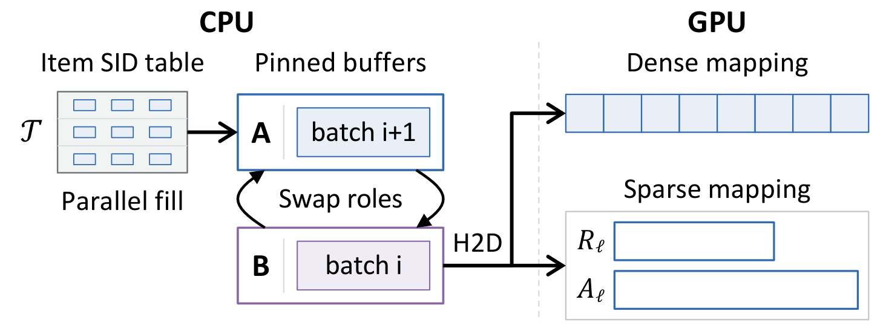
Figure 10 中 CPU 工作者向固定页缓冲 A 填充下一批索引片段，同时缓冲 B 把当前批传到 GPU 最终数组位置，随后交换角色。GPU 右侧分别展示稠密映射和稀疏映射的目标布局，说明传输的不是需要再重组的通用节点对象。前提是第一遍扫描已确定每个片段最终的大小与偏移，第二遍线程才可以独立生成不同区间。两个有限大小的缓冲避免完整主机输出一次性申请和固定页注册，也把传输分散到构建过程，而非在 CPU 完工后集中拷贝。图证明的是流程结构；真实耗时、带宽估算和不同缓冲数量的收益需要由后面的构建实验支持，不能从箭头并行关系直接推导在线请求尾延迟一定不受影响。输入是按完整 SID 字典序排序的主机表。相邻序列共同前缀以内的续接已经出现，只有超过最长公共前缀的位置引入新条目。原文 Algorithm 1 的计数逻辑可重写为：
符号解释：$\mathcal T$ 是有序 SID 表，$s^{(i)}$ 是第 $i$ 条序列，$s^{(0)}$ 取空序列，$n_{\ell}$ 为该步骤要存储的续接数。第一遍用这些计数分配数组，再对各 CPU 分块计数做排他前缀和，给线程分配互不重叠的输出范围。第二遍根据同样的相邻比较填写 token 和段边界，保证稀疏数组位置与下一级状态编号对应。稠密表也可在这些遍历里填充后继单元。构建主要占 CPU，边生成边传输，目标是缩短版本刷新并减少对 GPU 算力和传输带宽的竞争；排序输入及新的 SID 编码从何而来，仍属于本文计时范围之外的上游步骤。
3. 实验结果
3.1 质量前提与性能评估口径
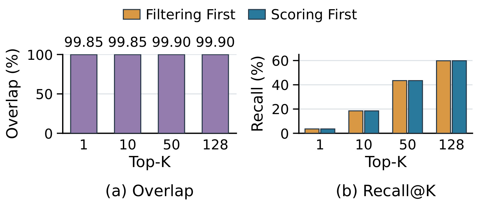
Figure 3 是先过滤方案的质量前提，使用 MovieLens-1M 上的生成推荐模型。左侧按返回数量比较两种顺序的物品重叠：top-1 与 top-10 均为 99.85%，top-50 与 top-128 均为 99.90%；右侧各个 cutoff 的召回柱几乎重合。它支持的是在这个模型和数据上的经验稳定性，而不是任何目录上都可保证相同结果。早期步骤通常把大部分概率分给合法续接，分母变化较小；后期虽然更稀疏，但主要细化已保留的前缀，作者据此解释结果为何接近。这个解释依赖模型训练充分程度和前缀概率分布，如果冷启动物品、目录变化或不稳定模型使大量概率落在非法 token 上，跨 beam 的分支增益可能放大。图中没有置信区间或多种模型质量水平的压力测试，因此它足以支持本文继续做系统设计，但不足以证明线上收益不受质量波动影响。
系统测量使用一台配备 GeForce RTX 4090 D 与两颗 Xeon Gold 5520+ 的服务器，部分实验使用另一台数据中心 GPU 服务器。比较对象包括不做约束的 Unconstrained、此前部署系统的 CPU trie，以及 GPU 上的 FlashTrie 和 STATIC。前两类约束基线仍计算所有续接分数，ZeroGR 则按模式减少有效 logit 以外的工作。实现也有差别：ZeroGR 与 CPU trie 使用 C++ 和 CUDA，FlashTrie、STATIC 运行于 PyTorch 2.11。因而差异不能全部归因于一个抽象的先后顺序；内核与框架开销同样进入观测结果，论文的实现消融对解释这点很重要。
Search 目录含接近十亿条互异的五 token SID 序列，每一步都投影到 18,432 维输出头，尽管各位置的 token 只占其中互不相交的 8,192、4,096、2,048、2,048、2,048 个位置。Watch 含约 41.7 亿条互异三 token 序列，每步输出头为 8,192。主性能测试使用 beam 128、请求批大小 1–32；FP32 隐藏维度 4,096，FP16 隐藏维度 1,024，二者不能直接当作只改变精度的严格对照。原文的“端到端”指全部 SID 解码步的过滤、投影、归一化与候选选择合计，明确排除生成模型推理时间。 它也未覆盖完整召回、排序、网络通信和业务响应路径，以下毫秒及加速倍数都以这个组件范围为分母。
3.2 稀疏Search与密集Watch的结果
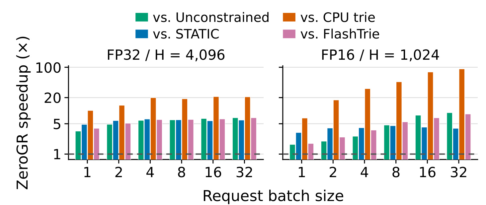
Figure 11 的纵轴是相对不同基线的加速倍数，并使用对数刻度，横轴是请求批大小；左右面板分别为不同隐藏维度下的 FP32 与 FP16。各色柱代表不同参照系统，因此同一张图里较大的数字未必意味着与更强基线相比增益更大。ZeroGR 在 Search 的全部已测批大小和精度上快于这些基线，包括不保证合法输出的 Unconstrained。在批三十二时，五步总延迟为 FP32 的 9.68 毫秒与 FP16 的 1.88 毫秒，后者比 Unconstrained 快 9.1 倍。这里的优势来自后期有效候选极少，全输出投影的成本随 beam 增长，而选择性路径的工作量更多由有效续接决定。相对 CPU trie 的差距随批增加尤其明显，反映主机查询与候选传送的扩展代价，不应当作所有纯 GPU 约束器都存在的通病。
需要补充一个容易漏掉的实现细节：作者将 STATIC 适配成只对有效 token 做 softmax，与 ZeroGR 保持相同归一化范围，但它仍完整计算输出投影。因此在大批量下，STATIC 也可能快于 Unconstrained，因为较小的 softmax 足以抵消查索引开销。比较 ZeroGR 与该版本 STATIC，主要检验的是能否进一步省去无效投影及优化阶段交接，不能笼统说所有性能对照都保留完整词表归一化。Figure 12 在另一 GPU 上复核 Search，FP16 各批延迟处于 0.93–1.07 毫秒；正文保留这组结果，但不重复展示趋势相同的第二组截图。硬件改变后的收益仍需按自己的 GPU、隐藏维度和批策略重新测量。
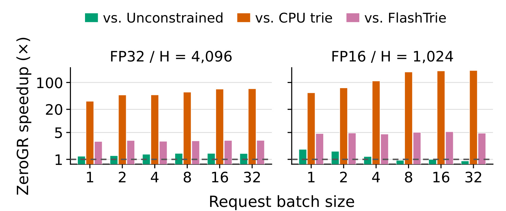
Figure 13 将同一系统放到更不利于筛选的 Watch 目录。第一步全部 token 合法，第二步仍约九成合法，只有最后一步足够稀疏，因此省去的投影少得多。图中的 STATIC 没有列出，是因为其索引在二十四 GB 的 4090 D 上放不下，不能解释成性能为零。ZeroGR 相对 CPU trie 最高可达 205 倍，主要由于后者要从主机返回大量合法候选；但与 Unconstrained 相比，FP16 大批时绿色柱可低于一，说明保证合法性仍会付出成本。FP32 与较小 FP16 批量通常更有利，不能写成所有配置都快于无约束。它验证了混合投影能在多数步骤较密时维持接近规则投影的速度，也清楚暴露了性能上限由目录形状决定，而不是索引设计一经采用就总能带来数量级收益。
Figure 14 换到显存足以容纳 STATIC 的数据中心 GPU，Watch 上 ZeroGR 比 STATIC 快 2.0–3.2 倍，这比相对主机前缀树的最大值更适合衡量 GPU 内部方案差异。合成数据 Synthetic-7 进一步改变 beam 与词表规模，七 token 数据包含 $2^{30}$ 条互异序列；beam 256、批三十二时延迟 8.28 毫秒，相对无约束最高 10.7 倍，词表增至 16,384 时最高可达 19.5 倍，批三十二的延迟仍在 3.1–4.5 毫秒范围。后两个值属于合成稀疏模式和不同配置，不可替换摘要中面向代表性基线的最高 9.9 倍，更不能作为真实业务收益。合成实验主要用于解释成本随有效数目而非输出头宽度增长的趋势。
3.3 从算术稀疏到真实延迟的消融
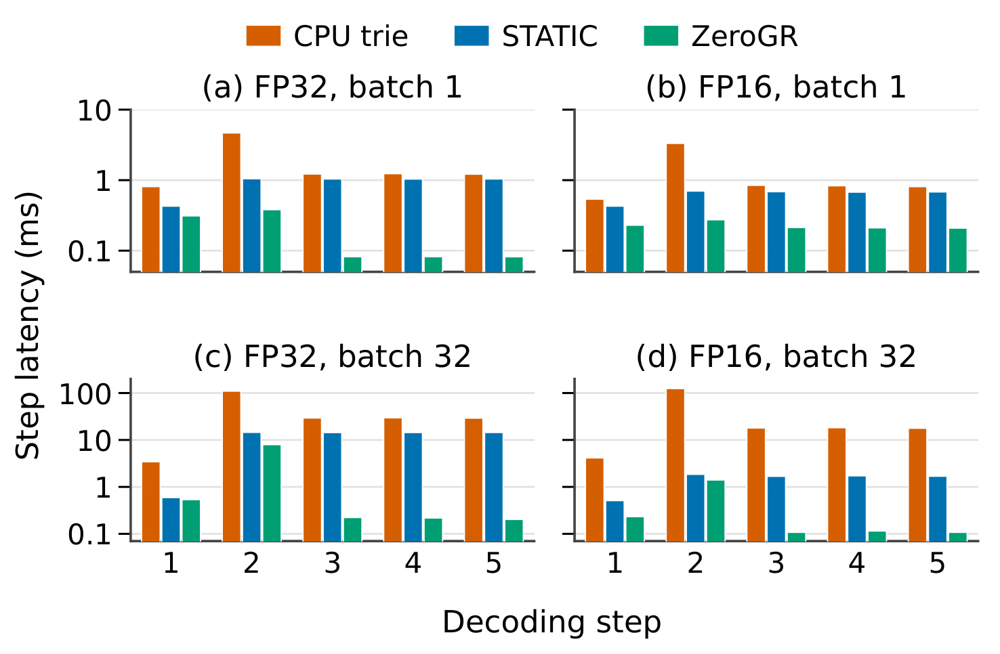
Figure 17 把 Search 总延迟拆到五个位置，纵轴仍为对数刻度，四个面板分别交叉精度与批大小。第二步在 ZeroGR 中通常最贵，因为它仍有较多合法候选；到了第三至第五步，稀疏性发挥作用，绿色柱大幅降低。原文以 FP32、批一为例，ZeroGR 这些后期步骤各约 0.08 毫秒，而 STATIC 约为 1.04 毫秒。基线仍为完整输出头支付成本，所以即便后期目录只允许极少数续接，柱高不会随有效集合一样缩小。逐步分解支持“减少无效投影是主要来源”的机制解释，也提醒我们仍有早期步骤瓶颈。若新的 SID 方案让前几步更密或增加解码长度，不能只取末级速度外推总收益；模型前向时间若占绝大多数，组件节省对完整请求的比例还会进一步降低。
图中橙色柱在第二步尤其高，与前缀树需要回传大量续接相吻合；绿色后期柱趋平则意味着索引查询、归一化或启动成本开始成为下限。后期继续减少少数logit，未必还能按同样比例减少时间。因此分步图既说明优化命中了哪里，也给出剩余开销位置，不能把末级密度趋近零解释为延迟也趋近零。
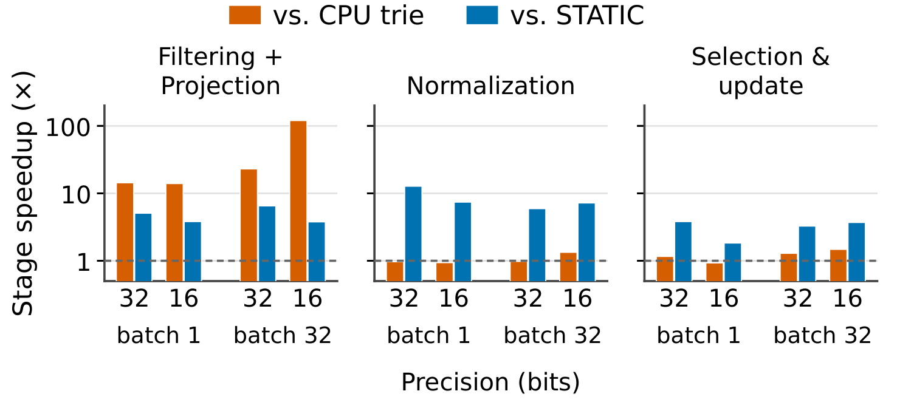
Figure 18 将上述时间拆成过滤与投影、归一化、选择与更新三组，颜色分别对应相对 CPU trie 和 STATIC 的速度。最左组对 CPU trie 的增益最大，在批三十二 FP32 下可到约 120 倍；原文说明此时过滤投影约占 STATIC 的百分之九十七，几乎占满 CPU trie 的时间。后两组对 CPU trie 大致相近，因为它们本来都在 GPU 的合法候选上工作；相对 STATIC 则持续更快，支持共享槽和小 top-k 降低后续处理开销的解释。三个阶段的倍数不能相乘，它们是同一总时间中不同部分的比较，最终收益由各自占比加权。这个结果将本文贡献从“所有阶段都发生同样革命”收缩为更准确的判断：主要收益来自最重的过滤投影，阶段间组织让收益没有在后处理里被吃掉。
图中以一为基准的水平虚线表示相同速度，低于它的柱说明某个阶段并没有赢。保留这些柱比只报告最大加速更重要，因为选择更新本来占比较小，单阶段略慢也可能被前段收益覆盖。反之，若新的模型输出头较小，过滤投影占比下降，当前的总收益可能显著收窄。
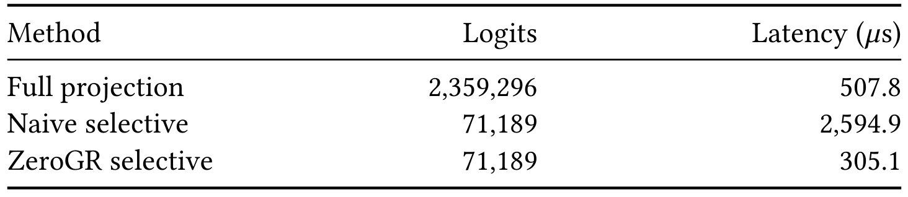
Table 1 在 Search 第二步、FP32、批一上固定比较条件。完整投影计算 2,359,296 个 logit，用时 507.8 微秒；朴素选择性投影仅算 71,189 个，却需要 2,594.9 微秒；ZeroGR 同样只算 71,189 个，用时降为 305.1 微秒。朴素方案先将所有 beam 候选压成紧凑列表，需要候选计数和前缀和，再临时收集权重行，最后启动单独乘法。它证明减少约三十多倍 logit 并不自动带来加速，反而可能比全投影慢约 5.1 倍。ZeroGR 依靠固定槽地址、原位读取权重行和同任务隐藏向量复用，比朴素选择性实现快约 8.5 倍，也快于规则完整投影。这一消融比只展示最终速度更有说服力，因为比较的是相同有效计算的不同组织方式；不过它仍是单个稠密步骤的局部配置，不能把 8.5 倍当作整个解码服务的增益。
表中所有数值单位都是微秒，且只包括第二步过滤与投影，不是每个请求完整耗时。两种选择性方案的logit数完全一样，故这项对照不能被解释成ZeroGR选出了更少或更好的候选；它隔离的是计算组织收益。由于总候选仍覆盖多个beam，隐藏向量能否在片上复用，是区别朴素逐候选点积与任务粒度计算的重要条件。
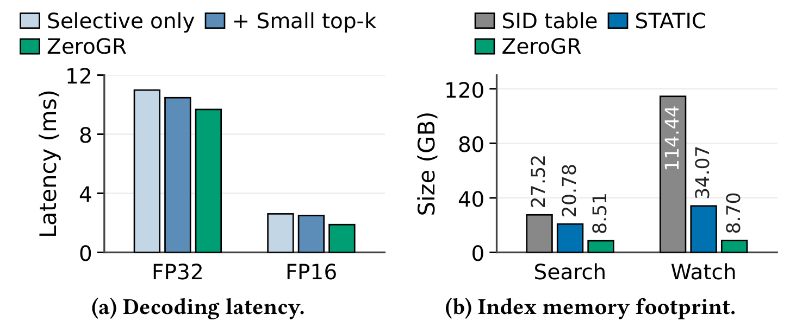
Figure 19 左侧从全程选择性投影开始，依次加入适合小集合的 top-k 与混合投影；右侧比较原始 SID 表、STATIC 索引和 ZeroGR 索引。FP16 下两项执行选择一起使相对全选择性方案的总延迟减少百分之二十七，说明在某些位置保留全投影更合算，而非稀疏计算越彻底越好。Search 的 STATIC 索引为 20.78 GB，ZeroGR 为 8.51 GB；Watch 分别为 34.07 GB 与 8.70 GB，降幅为 59.1% 和 74.5%。Watch 末级条目占比高，因此省掉后继状态数组尤其有利。这里比较的是常驻过滤索引，不是模型加缓存的总 GPU 显存；原始 SID 文本表的大小也不是可直接对照的运行内存。图中的省存储逻辑与 Figure 6 的位置即状态设计一致，但部署时还需给新旧版本切换、工作区和模型前向留空间。
右侧Watch原始SID表为114.44GB，STATIC索引已经明显更小，ZeroGR进一步缩小；Search的原始表则为27.52GB。两组排序说明原始文件大小、索引表示和GPU可用空间是不同量，不能只比较文本表大小来判断某方案能否部署。左图也保留FP32与FP16在同一优化上的不同收益幅度，提示模式选择必须依据实际测量，不能由有效比例单独决定。
3.4 重建窗口与服务干扰的证据
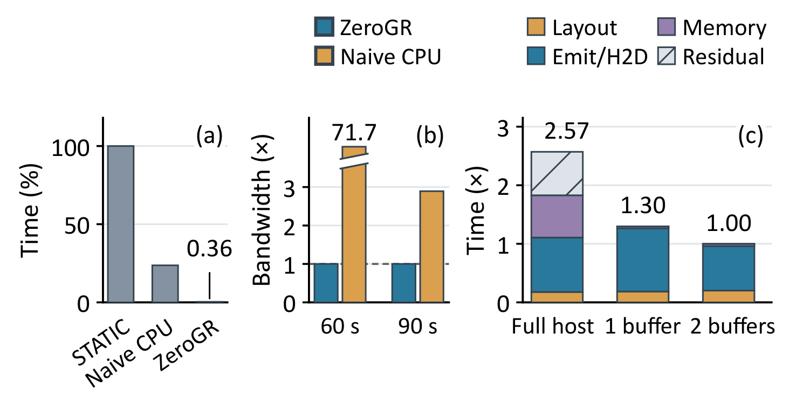
Figure 20 左侧以 STATIC 构建时间归一化，ZeroGR 为其 0.36%，对应原文绝对耗时 0.914 秒，作者据此报告约 278 倍加速。中间把六十秒和九十秒更新窗口里的主机到设备带宽需求归一到 ZeroGR，后者在六十秒窗口只需约 0.144 GB/s；朴素 CPU 构建占用接近整个六十秒窗口，剩余传输时间极少，所以需求柱出现断轴及 71.7 倍数值，不能按完整柱高度肉眼估计。右侧对同一并行两遍构建器比较完整主机输出、单缓冲、双缓冲，分别为最终时间的 2.57、1.30、1.00 倍，支持有限缓冲和生成传输重叠各有贡献。这组计时从已排序 SID 表在主机内存中开始，到 GPU 映射就绪结束，没有包含产生新编码、离线训练和输入排序。它证明更新路径更省时、带宽需求更温和，却没有直接给出同时更新时的请求 P99 曲线，不能据此宣称在线服务完全零干扰。
整体上，论文展示了质量前提、真实目录组件性能、局部实现消融、显存与重建这几层证据。它没有给出可用于判断上线业务收益的随机试验，也没有展示广泛用户分组、长期尾物品覆盖或不同训练质量下的召回稳健性。本文保留这些空白，是因为目录合法性、候选质量、系统吞吐和业务指标承担不同问题：加速过滤组件不等于改善相关性，返回合法物品也不等于满足全部业务规则，索引构建更快也不自动保证模型更新一致性。独立复现应先对齐输入表、SID 位置词表、归一化顺序、输出集合、精度、批大小和计时排除项，再比较系统速度。
4. 总结
4.1 可以复用的系统判断
ZeroGR 最有价值的贡献，是把目录约束变成输出投影前的计算计划，并围绕这个变化重新组织数据。逐步切片索引利用固定长度解码只查询一个深度的事实，稀疏数组位置同时承担后继状态；共享槽让变长候选在阶段之间保持稳定地址；队列与片上隐藏向量复用减少选择性投影的组织成本；预热选择保留密集步骤的规则矩阵乘法；两遍布局构建再让这些结构可以快速刷新。每一个局部设计都对应一个明确的冗余来源，因此可以分别检验，而不是只把最终速度归结为“GPU化”或“稀疏性”。Table 1 中朴素稀疏方案变慢的结果尤其值得记住：决定实际系统收益的常常是为稀疏访问付出的调度与搬运，而不是纸面 FLOPs。
对推荐系统，它适合评估已有生成式召回中的输出头、合法目录及 beam 处理占比，优先找出有效密度低而完整投影贵的步骤。对大模型推理，可迁移的思路是让已知约束尽早决定哪些分数需要计算，同时保留高效的规则路径；但自然语言词表的合法集合、通用语法状态和动态工具协议可能更复杂，不能直接套用固定长度 SID 的位置编号。把本文与其他生成式检索加速结合属于个人研究判断，需要重新计算共同分母和质量影响，论文没有给出与前缀缓存或推测解码联合运行的结果。
4.2 局限与值得继续验证的部分
首先，归一化顺序确实改变算法语义。MovieLens 的高度重合是一项积极经验，尚不能排除模型训练不足、目录变更或难例中出现更大偏差；需要对真实任务重测质量，而非只核对合法率。其次，性能边界只覆盖解码组件，FP32 与 FP16 的隐藏维度也不同；若模型前向主导时延，论文的组件倍数不能直接兑现为服务倍数。第三，真实目录属于作者工业数据，未核验独立代码和可公开输入，另一 GPU 的具体硬件信息也有限，复现条件仍不完整。第四，STATIC 与 FlashTrie 的框架实现不同，虽然局部消融支持布局机制，最终速度仍包含工程栈差异。第五，重建基准没有纳入上游排序，也缺少更新并行发生时的完整请求尾延迟与版本切换一致性数据。最后，论文未提供线上 CTR、成交或用户体验指标，不能用“已用于工业目录”替代业务有效性验证。
后续可沿三条路线推进。第一，建立小规模可公开目录基准，固定权重与候选后，对比两种 softmax 顺序在不同无效概率质量和 beam 数下的输出差异，定位质量假设何时失效。第二，以自己的精度、隐藏维度、批大小和 GPU 复现 Table 1 与逐步 profile，分别测规则投影、朴素稀疏和共享槽路径，验证阈值选择有没有过拟合预热流量。第三，把新旧索引同时驻留、双缓冲带宽、冷版本预热与真实 P95/P99 放入一次更新压力测试，检验刷新窗口和请求抖动能否同时满足。这些跟进都围绕本文尚未闭合的证据，不需要先假设所有业务都应改用同一个解码架构。
此外，公开复现应把输出集合与时延一起保存，而非只留下吞吐日志。对每个查询保留两个解码顺序的top-k重叠、召回差异、无效概率质量、有效候选数和模式选择，才能判断一次版本升级到底改变了模型分布、目录结构还是内核效率。只有这些记录能对齐，组件加速才可以被解释为相同任务下的资源节省，而不是用更窄搜索或不同归一化换来的表面时间收益。